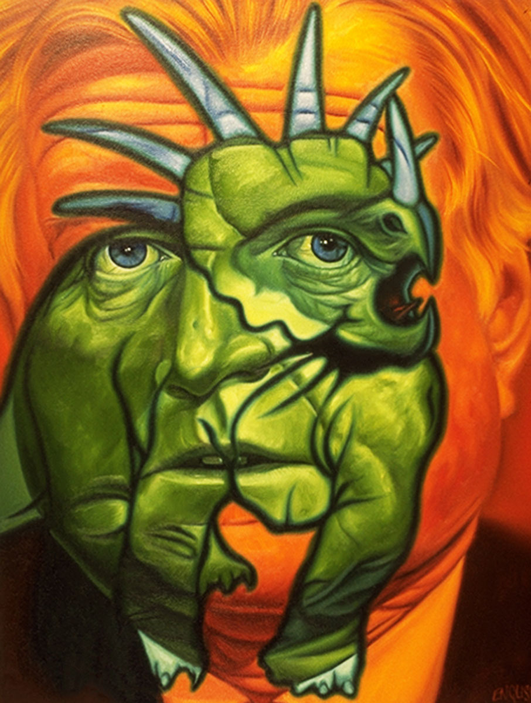
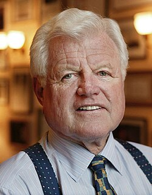
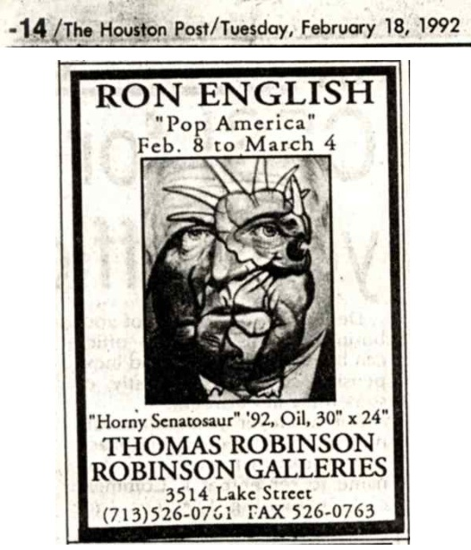
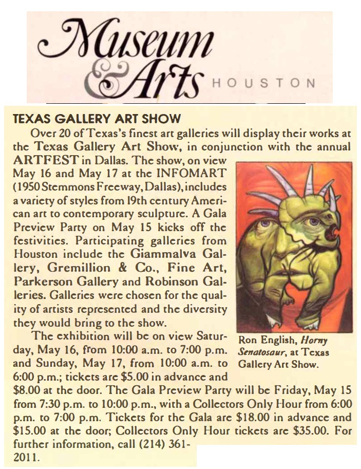

Exhibitions
Texas Gallery Art Show, Infomart, Dallas, Texas, US, May 16–17, 1992.
Literature
Ron English, Popaganda: The Art & Subversion of Ron English (San Francisco: Last Gasp, 2001), p. 72. ISBN 1-887128-60-3.
“Ron English: ‘Pop America’” [advertisement], The Houston Post, February 18, 1992, p. 14, illustrated.
“Texas Gallery Art Show,” Museum & Arts Houston, May 1992, illustrated.
Notes
Also known as Horny Senatosaur.
The Houston Post advertisement identifies the work as Horny Senatosaur, 1992, oil, 30 × 24 inches. The present catalogue record identifies the work as Horny Senatosaurus, 1991, oil on canvas, 42 × 36 inches.
This work references Ted Kennedy.
Ancillary Documentation


